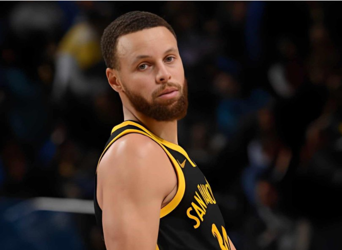
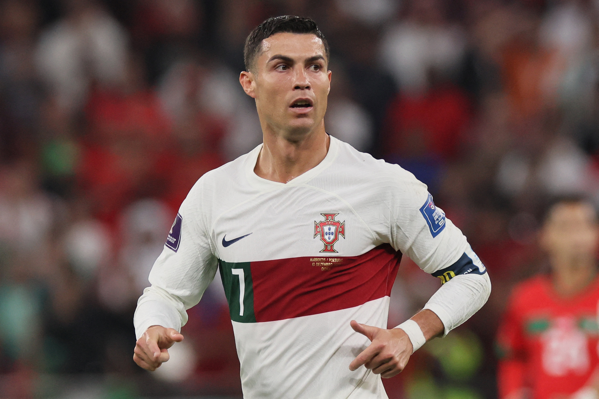
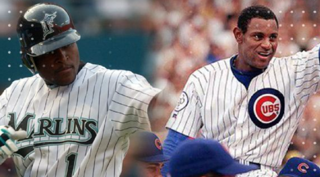
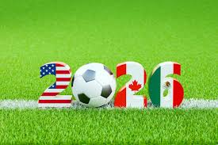
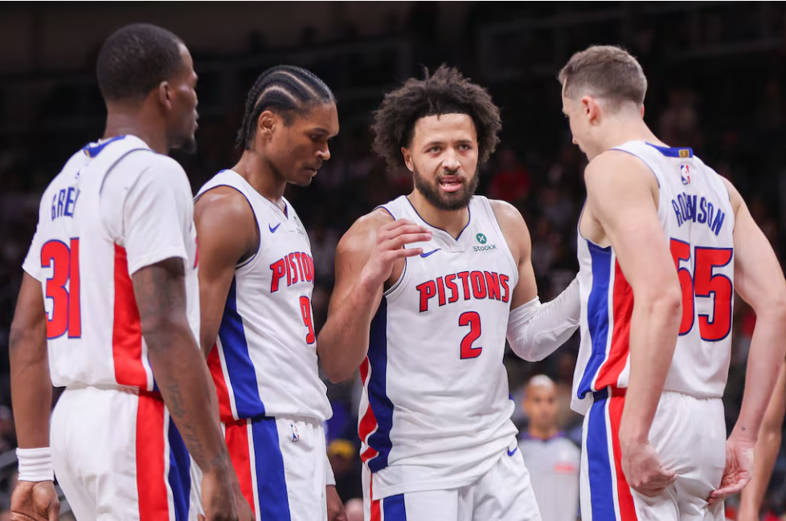

Duro golpe: Stephen Curry se lesiona el cuádriceps derecho y se perderá al menos 1 semana
Se espera que Stephen Curry se pierda al menos una semana, y tal vez un poco más, por una contusión en el cuádriceps..

Por: Monica Vega
Stephen Curry salió cojeando del banquillo al final de la derrota de Golden State por 104-100 ante los Houston Rockets el miércoles por la noche tras sufrir una contusión en el cuádriceps derecho.
Se someterá a una resonancia magnética para determinar su estado.
"Obviamente, esto lo cambia todo: nuestras rotaciones, cómo jugamos, con quién jugamos, así que ya veremos", dijo el entrenador Steve Kerr. "Cuando supe que era un cuádriceps, me sentí aliviado; es mejor que un tobillo o una rodilla, así que espero que se recupere pronto y esté bien. Pero tenemos que mantener la posición".
Curry y Amen Thompson cayeron con fuerza bajo la canasta a 3:24 del final y el partido empató a 91 tras la penetración de Thompson, que inicialmente se pitó como falta ofensiva. Houston impugnó la decisión y Curry anuló la decisión a un bloqueo.
Kerr dijo que veía a Curry lesionado después de esa jugada. El dos veces MVP terminó con 14 puntos, con 4 de 13 en tiros de campo (2 de 9 triples), siete rebotes, cinco asistencias y siete de las 16 pérdidas de balón de los Warriors, que resultaron en 22 puntos de Houston
Curry tiene un promedio de 27,9 puntos por partido, con un 39,1% de acierto en triples, y su gravedad y anotación siguen siendo el eje de la ofensiva de Golden State.
Cristiano Ronaldo se alía con Topuria y entra como accionista al mundo de las artes marciales mixtas
Con Ronaldo la promotora española WOW FC confía en "acelerar su expansión global

Por: Monica Vega
Cristiano Ronaldo, delantero portugués del Al-Nassr y cinco veces ganador del Balón de Oro, se convirtió en nuevo accionista de la promotora española de artes marciales mixtas (MMA) 'The Way of Warriors FC' (El Camino del Guerrero, WOF FC), en la que también participa el hispano-georgiano Ilia Topuria, campeón del mundo de MMA.
Su entrada supondrá un "hito definitorio para WOW FC y un momento transformador para el futuro de las artes marciales mixtas a nivel mundial", según anunció este jueves la propia compañía en una nota de prensa.
"Las MMA representan valores en los que realmente creo: disciplina, respeto, resiliencia y la búsqueda constante de la excelencia. WOW FC está construyendo algo único y poderoso, y estoy orgulloso de unirme a este proyecto para ayudar a elevar el deporte e inspirar a la próxima generación", afirmó el internacional portugués.
Estadísticas interesantes
En datos proporcionados por la promotora, WOW FC creció en todos los segmentos demográficos, con una asistencia a eventos de más del 400 % año tras año, con ventas anticipadas que superan de media los 5.000 espectadores por show. Además, ha distribuido sus eventos a más de 170 países en todo el mundo.
Con la llegada de Ronaldo, la empresa española confía en "acelerar su expansión global", en un movimiento que no sólo englobe al mundo del deporte, sino también a la "cultura, moda, entretenimiento y educación".
Según su presidente ejecutivo, Arturo Guillén, la entrada del futbolista portugués en el accionariado es "un momento histórico": "CR7 es más que una superestrella global: es un símbolo de ambición, resiliencia y excelencia. Su confianza en nuestra misión valida todo lo que hemos construido y eleva el futuro que estamos moldeando. Juntos, con Cristiano, Ilia Topuria, nuestros atletas, socios y los millones que siguen este movimiento, estamos listos para redefinir el papel que las MMA pueden desempeñar en la cultura global".
Por su parte, Topuria calificó la alianza con Ronaldo como "un momento poderoso para el deporte".
"Cristiano Ronaldo representa los más altos estándares de profesionalismo, trabajo duro y excelencia global. Juntos, llevaremos las MMA a nuevas alturas e inspiraremos a atletas y fans de todo el mundo a creer que todo es posible", sentenció.
Sammy Sosa y Luis Castillo recibirán menciones honoríficas del Premio Juan Marichal
La ceremonia de premiación se llevará a cabo el 10 de diciembre en el Salón La Fiesta del Hotel Jaragua

Por: Monica Vega
Las carreras de dos figuras históricas del béisbol dominicano serán homenajeadas durante la quinta ceremonia del galardón que reconoce a los mejores peloteros quisqueyanos de cada temporada de MLB.
El consejo consultivo del Premio Juan Marichal anunció, mediante una nota de prensa, que entregará menciones honoríficas a Sammy Sosa y Luis Castillo por sus trayectorias en las Grandes Ligas, durante el evento que se celebrará el próximo 14 de diciembre en Santo Domingo.
En el caso de Sosa, el reconocimiento llega poco después de su entrada al Salón de la Fama de los Chicago Cubs, un logro que se produce tras años de distanciamiento entre jugador y equipo.
Sosa inició su carrera con los Cubs en 1992 y jugó 13 temporadas con la franquicia. Aún es el líder histórico del equipo en jonrones (545) y figura entre los primeros diez en múltiples categorías: porcentaje de slugging (2.º, .569), carreras impulsadas (3.º, 1,414), bases totales (4.º, 3,980), carreras anotadas (6.º, 1,245), bases por bolas (6.º, 798), turnos al bate (8.º, 6,990), hits (9.º, 1,985) y juegos disputados (10.º, 1,811).
Ganó el premio Jugador Más Valioso de la Liga Nacional en 1998, temporada en la que conectó 66 cuadrangulares (récord de franquicia) y llevó a Chicago a la postemporada. Además, fue siete veces participante del Juego de Estrellas, seis veces ganador del Bate de Plata y sigue siendo el máximo jonronero en la historia del Wrigley Field con 293 vuelacercas.
En cuanto a Luis Castillo, el exsegunda base es miembro de la clase inaugural del Salón de la Fama de los Miami Marlins y aún ostenta varios récords de la franquicia, incluido el de más juegos disputados. Fue parte clave del equipo campeón de la Serie Mundial 2003 y, durante su permanencia con los Marlins, fue tres veces All-Star y tres veces ganador del Guante de Oro.
Su racha de 35 partidos consecutivos conectando de hit en 2002 estableció el récord de MLB para un segunda base en ese momento y sigue siendo la cadena más larga de juegos disparando hits para un pelotero dominicano en toda la historia de las Grandes Ligas
Mundial 2026: la FIFA dio a conocer cómo será el sorteo del 5 de diciembre, con novedades para México, Argentina y España
El organismo rector del fútbol mundial anunció el formato y los bombos para el evento que definirá los grupos del torneo que se jugará en tres países.

Por: Monica Vega
A 10 días de conocer el cuadro del próximo Mundial de la FIFA, la casa madre del fútbol mundial publicó el procedimiento que se llevará a cabo el próximo 5 de diciembre, cuando se efectúe el sorteo de la Copa Mundial 2026.
Hay 42 selecciones ya confirmadas y otras seis que se conocerán en marzo, por lo que en el sorteo habrá 48 bolillas, repartidas en cuatro potes de 12 cada una.
En primer lugar, la FIFA confirmó algunas suposiciones: los tres países organizadores estarán en el Bombo 1 junto a las nueve selecciones mejor ubicadas en el último ranking FIFA: España, Argentina, Francia, Inglaterra, Brasil, Portugal, Países Bajos, Bélgica y Alemania.
La misma clasificación se usará para los otros 30 seleccionados que ya tienen su boleto asegurado: los 12 siguientes equipos mejor ubicados irán al Bombo 2 y los siguientes 12 al Bombo 3. Los seis peores combinados nacionales irán al Bombo 4, que todavía tiene seis asientos disponibles: cuatro son para el repechaje de la UEFA y dos para la repesca intercontinental (participan selecciones de la Concacaf, Sudamérica, África, Asia y Oceanía).
El sorteo comenzará por algo que ya todos sabremos: las tres primeras bolillas en salir serán las de los tres organizadores, sabiendo ya que México será cabeza de serie del Grupo A, Canadá del Grupo B y Estados Unidos del Grupo D. En el bolillero, estas tres esferas estarán marcadas con un color particular: la de México será verde, la de Canadá será roja y la de Estados Unidos será azul. Las otras nueve serán blancas.
Tras salir los nombres de los países locales, seguirán las nueve bolillas restantes del Bombo 1, pero acá empiezan las sorpresas. La FIFA comunicó que, con el objetivo de mantener un “equilibrio competitivo”, las dos mejores selecciones del ranking, España y Argentina, irán a dos partes del cuadro completamente distintas, garantizando que, si ganan sus respectivos grupos, solo se encuentren en una hipotética final. Lo mismo sucederá con Francia e Inglaterra, que están en el tercer y cuarto escalón de la clasificación.
México, Canadá y Estados Unidos ya saben que si ganan sus grupos (el A, el B y el D, respectivamente), enfrentarán a un tercero, mientras que mexicanos y canadienses se verán las caras en 16vos de final si ambos terminan segundos.
Otra situación ya preestablecida será la posición de grupo en la que aparecerán las selecciones sorteadas, algo clave para conocer el orden de los partidos. Por ejemplo, el Grupo A quedará conformado así:
México
Selección del Bombo 3
Selección del Bombo 2
Selección del Bombo 4
Es decir que México debutará ante Noruega, Egipto, Argelia, Escocia, Paraguay, Túnez, Costa de Marfil, Uzbekistán, Qatar, Arabia Saudita o Sudáfrica. La única posibilidad que no se dará es Panamá, porque comparte confederación con el seleccionado azteca.
El mismo orden le fue sorteado a Estados Unidos, mientras que, en el caso de Canadá, su debut será ante un país del Bombo 4, seguido del Bombo 3 y cerrando su fase de grupos ante una selección del Bombo 2.
Los bombos para el Mundial 2026
Bombo 1:
México
Canadá
Estados Unidos
España
Argentina
Francia
Inglaterra
Brasil
Portugal
Países Bajos
Bélgica
Alemania
Bombo 2:
Croacia
Marruecos
Colombia
Uruguay
Suiza
Japón
Senegal
Irán
Corea del Sur
Ecuador
Austria
Australia
Bombo 3:
Noruega
Panamá
Egipto
Argelia
Escocia
Paraguay
Túnez
Costa de Marfil
Uzbekistán
Qatar
Arabia Saudita
Sudáfrica
Bombo 4:
Jordania
Cabo Verde
Ghana
Curazao
Haití
Nueva Zelandia
Italia/Irlanda del Norte/Gales/Bosnia y Herzegovina
Ucrania/Suecia/Polonia/Albania
Turquía/Rumania/Eslovaquia/Kosovo
Dinamarca/Macedonia del Norte/República Checa/Irlanda
R.D. del Congo/Nueva Caledonia/Jamaica
Iraq/Bolivia/Suriname
La resurrección de los Pistons
Un equipo que hace tan solo dos años perdió 28 partidos seguidos hoy está primero de conferencia y ha igualado su récord histórico de victorias consecutivas.

Por: Monica Vega
Qué vueltas puede llegar a dar la vida. Un día estás en la cima de una montaña que ha costado años escalar, y con un resbalón, una eternidad para volver a subirla; a veces toca empezar de cero. Pero los trampolines también existen. Cambios drásticos que provocan alegrías inesperadas; sueños que parecen difíciles de imaginar se convierten en la realidad. No son casos comunes, pero desde luego sonmemorables y deben ser celebrados. Esta es la situación actual de unos Detroit Pistons que han empezado la temporada como una moto que llevaba años cargando su gasolina; le han dado la vuelta a la tortilla por completo en tan solo dos años.
“No somos tan malos como para ir 2-26. Imposible”. Son las declaraciones que Cade Cunningham realizó en diciembre de 2023, después deque los Pistons perdieran 25 partidos de forma consecutiva, en una racha que se alargó hasta 28. Dos años después, como si del Ave Fénixse tratase, han logrado resurgir de sus propias cenizas; primeros de la Conferencia Este (15-3) y una racha histórica de victorias queacaba de finalizar con una derrota en Boston por la mínima. Los Pistons han conseguido ganar 13 partidos seguidos; un mes entero sinperder desde el 27 de octubre ante los Cavaliers. Con esta racha han igualado el récord de victorias consecutivas de la franquicia, que consiguieron en 1990 y 2004 (ambos años fueron campeones de la NBA). Un giro de 360 grados que ha revertido la situación de un equipo queestaba a la deriva (14-68 en la temporada 2023-24). El mayor artífice de este cambio; el propio Cunningham. En su quinto año en la liga,el base está jugando al mejor nivel de su carrera: su máximo de puntos (27,1) y asistencias (9,6) por partido, con unos números que hanido aumentando progresivamente desde que la joven estrella ingresó en la liga.
Es el mejor inicio del equipo en casi 20 años; la última vez que iban primeros de conferencia tras 15 partidos disputados corría la temporada 2006-07, al inicio de la tercera campaña después de su último anillo; un año que llegaron a las finales del este. La de Detroit no es una franquicia ajena al éxito; a finales de los 80 (1989 y 1990) los Bad Boys llevaron a los Pistons a sus dos primeros anillos, ylo hicieron de forma consecutiva. Isiah Thomas, Joe Dumars, Dennis Rodman y Bill Lambeer impusieron su juego (muchas veces al límite del reglamento), y se coronaron en una de las épocas más competitivas de la NBA. 15 años después, un nuevo equipo con unas características similares volvió a regalar un anillo a Detroit (2004) de la mano de Chauncey Billups, Richard Hamilton y Ben Wallace, en la que la últimagran época de los Pistons.